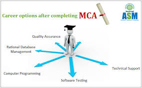

Yes, a Master of Computer Applications (MCA) is a good course for those interested in a technology career, as it leads to better job opportunities and higher salaries in fields like software development, data science, and cybersecurity. The degree provides advanced computer science knowledge and skills, and the IT industry's growth means steady demand for MCA graduates.
